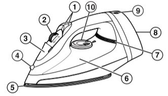

Parts and features
The iron consists of the following parts:

- Blast/Spray Buttons
- Adjustable Steam Switch
- Water Tank Opening
- Spray Nozzle
- Soleplate
- Water Window
- Power On Light
- Heel Rest
- Cord Retraction Button
- Temperature Control Dial
Notice the retractable cord is located on the device's behind.
How to dry iron
Follow these steps precisely:
- Plug into outlet.
- Turn the Adjustable Steam Switch to Dry Iron.
- Turn Temperature Control Dial to desired temperature. Allow 2 minutes to reach desired temperature.
- Turn Temperature Control Dial to OFF and unplug.
Please find out wether the clothes to iron are meant to be dry-ironed
How to steam iron
Follow these steps precisely:
- Unplug. Turn Adjustable Steam Switch to Dry Iron.
- Using a cup, slowly pour tap water into water tank opening until MAX fill line has been reached. Do not fill iron directly from the faucet.
- Plug into outlet.
- Turn Temperature Control Dial to desired fabric setting in the steam range.
- Allow 2 minutes to reach desired temperature.
- Set Adjustable Steam Switch to Dry Iron. Turn the Temperature Control Dial to OFF. Unplug.
- Empty water from the iron following directions in “Care and cleaning.”
Please find out wether the clothes to iron are meant to be steam-ironed
Care and cleaning
Follow these steps precisely:
Iron
- Turn temperature control dial to OFF. Unplug and let cool.
- Drain water and secure cord.
- Store in an upright position.
Soleplate
- Never iron over zippers, pins, metal rivets,or snaps since these may scratch the soleplate.
- To clean buildup on soleplate, wipe with a sudsy cloth. Do not use abrasive cleansers or metal scouring pads.
Do not try to fix device at home if broken in any way.
Self Clean
Follow these steps precisely:
- Turn Temperature Control Dial to OFF
( ) and set Adjustable Steam Switch to
Dry Iron . Fill iron with water to 1/2 of
its maximum capacity.
- Turn Temperature Control Dial to Linen
setting and let iron heat for 2 minutes.
Keep Adjustable Steam Switch on Dry
Iron .
- Turn Temperature Control Dial to OFF
( ). Unplug and hold over a sink with
soleplate facing down.
- Turn Adjustable Steam Switch to MAX,
while pressing Blast Button often. Boiling
water and steam will flow out of steam
vents. Allow all water to drain from iron.
- Gently move iron front to back to allow
water to clean entire soleplate area.
Frequently do this process to ensure longevity and efficiency of the device.